Understanding WPF Application Development with CODE Framework's WPF MVVM/MVC Components
The CODE Framework is an open-source application framework by the makers of CODE Magazine. It is entirely free of charge. It covers a wide range of features that can be applied altogether or individually in an À la carte fashion. All of these features revolve around a single concept: Building advanced business applications in a productive and maintainable fashion while maintaining great application architecture. In this article, we are focusing on a subset of the CODE Framework, specifically the components used to build WPF applications using the MVVM and MVC patterns.
“Why another framework?” you may ask. After all, there are quite a few frameworks out there already. So why would a company like EPS and CODE Consulting (the same company that owns CODE Magazine) go through the effort of creating another framework? Well, for one, large parts of this framework have been around for quite some time and have been sold as part of a bigger commercial solution platform. So while the "CODE Framework initiative is relatively new, much of the code this framework is based on is quite solid and has been around for a while (some parts more so than others). But the more important reason is that we felt we had something unique and important to contribute! While there is a lot of great stuff going on in Microsoft development communities, we feel it is simply too difficult to wield many of the great techniques and technologies. When looking at our own consulting and custom software customers, as well as what we saw at the many events and training classes we are involved with, and all the feedback we get from CODE Magazine readers, a common pattern seems to emerge. Let’s see if this sounds familiar: “You are either building an application or you are looking into frameworks and architecture for your next project, and you find tons of great stuff. But somehow, it all seems a bit complicated, especially if your project is a Windows project. So you get up and running and you are using amazing things and feel your architecture is real solid. But still, somehow it remains too difficult and progress is too slow. Only the best team members can work on the project (and they are clearly disgusted with the inability and lack of skill of everyone else) and even they are not managing to put things out as fast as you’d think. And at the end of the day the system seems a lot less flexible and maintainable than you’d expect, but you feel it is probably just your lack of your own knowledge when it comes to the details of the architecture and implementation.” Does that ring any bells?
Making Things Simpler, More Productive, and Unified
The reality is that we have reached a point with Microsoft technologies, where we have found amazing solutions to many problems. We can now create systems with better features than ever before, and we have amazing techniques for things such as testing and many other aspects of software projects. All these techniques are useful and worth learning, so you can apply them when you face certain problems.
We feel that the time has now come to make it simpler to apply many of these techniques!
We also feel that especially in the world of Windows development (be that current Windows technologies, or be that Windows 8 and its new Metro development environment) things are somewhat out of hand and there is no single skills-path people can take. If you are a Microsoft Web developer, you have one or two clear approaches you can take. You can become a Web Forms developer, or you can become an ASP.NET MVC developer. The latter being a very common choice these days. When you choose ASP.NET MVC, you have a very clear learning path ahead of you. It is well-understood and documented how ASP.NET MVC applications work. So you can learn that and then start working on ASP.NET MVC projects. You can also hire other ASP.NET MVC developers and expect that they have a similar level of knowledge. They will know how an ASP.NET MVC project is structured and they will have a good idea of how things flow and work together. (And if they do not, you can always make them read a book and they will arrive at that same level of knowledge.)
We decided to use an MVC-style approach, since it is a setup a lot of people already understand and use.
In Windows (and by extension, Silverlight) on the other hand, things are a bit different. The problem starts with people being quite vague on what technology to even use for Windows applications. But let’s assume for now that people have advanced far enough to use one of the XAML-based technologies. Even then, what is the common set of knowledge? It seems that the industry has now come to a point where “having a view model in the mix” is fairly widely accepted, bringing us to some incarnation of the MVVM pattern. But that is where the commonalities end.
There now are tons of frameworks that implement MVVM in different ways, each of them varying greatly in approach and implementation. There is no single set of knowledge a WPF developer can learn that is in any way similar to how an ASP.NET MVC developer could approach things. You may be learning Microsoft’s PRISM approach, but then how many people in the industry are there that have made the same learning effort? What are the chances that you will move onto your next project and it uses that framework, or what are the chances you will hire a developer off the street who happens to know PRISM? (Or substitute any other framework of your choice here.) The reality is: That chance is fairly slim. And even if they do, their interpretation of that framework may vary widely. Not to mention that all this brings us right back around to the fact that many of these frameworks remain difficult to use.
So looking at this situation, I feel strongly that this needs fixing. But how do we best approach this? I believe that WPF applications (or any other XAML or Windows technology for that matter) should not vary widely from other UI implementations. After all, why would the middle tier or the back end of an application change, just because you use a certain UI technology? I also feel that you should pick an approach that is known to work very well and is widely understood. In the world of .NET (and even beyond), one such approach is MVC. When you look at MVVM and MVC patterns, they have many things in common. Sure, there are some things that are different but the big picture items remain the same. We have UI definitions (views), we have models specific to those views that generally get populated from elsewhere, and in the MVC world, we have controllers that bring it all together and provide a starting point (an aspect that is sorely lacking in many MVVM implementations).
One feature of the CODE Framework is the ability to set up WPF projects using the same patterns as ASP.NET MVC applications. If you create a new WPF application using a CODE Framework template, you end up with a project setup that is practically identical to ASP.NET MVC. In fact, you could copy a lot of ASP.NET MVC code into your CODE Framework MVVM/MVC project and it will likely just work. It will also allow you to move ASP.NET MVC developers onto your project and they will become productive very quickly. (Of course their views are going to be defined in XAML not HTML, but more about that below.) And, as ASP.NET MVC has demonstrated, this overall setup is relatively easy to understand. Sure, the fact that there is a Controllers folder with classes that act as the starting point for just about anything may not be the most intuitive thing initially, but it is easy to learn. “If you are lost, look in the Controllers folder and add a breakpoint” is just about all a developer needs to know to get going. From that point forward, developers can step through the code and follow the flow to see what is going on. This basic ability is often completely absent from many MVVM projects. Techniques such as “inversion of control” are very useful, but they need to be applied in skillful ways, because their downside is that - as the name implies - they turn people’s worlds upside down. At that point, it becomes extremely difficult to follow what an application does. It is the easiest way to completely kill developer productivity.
Note: One of the core mantras in the CODE Framework is to make all features and techniques optional. If you find a certain approach or component useful, then go ahead and use it! But you can always skip the parts you do not like. And you can mix and match CODE Framework components freely with other frameworks. After all, there is no need to re-invent the things that already work well.
Providing Things that Simply Aren’t Available Elsewhere
One of the characteristics of many MVVM frameworks that always strikes me as exceedingly odd is that they seem to have very few features that are actual interface features. I am talking about things that are actually visible on the screen. Most MVVM frameworks provide features to deal with models and associated functionality. They provide testing that functionality. They provide features to make things configurable. And almost as an afterthought, they provide a feature that loads the “view” from a XAML file or a class created from XAML. But no help is provided whatsoever in creating that XAML. All the XAML variations (including WPF) provide awesome features that can be leveraged to create UIs in very productive ways and with highly professional results (especially in business application scenarios). But very few people know how to do this, and that goes for framework creators as well. It even includes Microsoft, who have not done a good job at explaining that part of XAML development. It is not uncommon to attend the keynote of a major conference to see a demo of an amazing UI, yet when you attend breakout sessions, most speakers’ demos look awful. I suppose it makes sense because in the Microsoft development world, there are very few artists. Whatever the reason may be, this needs fixing!
CODE Framework provides a number of features to create XAML-based UIs quickly and productively, but also in a fashion that is very reusable. Let’s say you need to create a customer edit form in your business application. With components provided by the CODE Framework, you only write a minimum amount of code to do so. You can use the resulting XAML file in WPF, Silverlight, Silverlight on Windows Phone 7, and even XAML for Windows 8 Metro. (In fact, it will even be useable in ASP.NET MVC scenarios and even in iOS and Android scenarios.) Some of these techniques have been described in this magazine (Quick IDs: 112091, 1011071). Many parts of the CODE Framework are a continuation of these articles. Think of it as us making larger samples for those articles available in production quality code.
Getting Started
To get started with the CODE Framework, you first need to obtain a copy of the framework. You can download the framework from CodePlex (http://codeframework.codeplex.com). This gives you access to debug and release builds of the framework (multiple versions) as well as the actual source code. A simpler way to get the framework, however, is to install the CODE Framework tools through the Visual Studio Extensions Manager. To do so, choose “Extensions Manager” from the Tools menu, select the “Online Gallery” category, and type “CODE Framework” into the search box. This will retrieve a list of matches; including the CODE Framework Tools (see Figure 1).
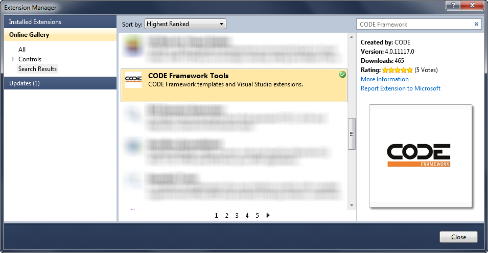
Figure 1: Installing the CODE Framework Tools from the Visual Studio Extension Gallery.
After installing the CODE Framework Tools, you gain access to new project and item templates. To create a new CODE Framework WPF MVVM/MVC project, simply choose New Project from the File menu and look for the new CODE.Framework category in the list of available template types. Select the CODE Framework WPF MVVM/MVC application template and click OK (Figure 2).
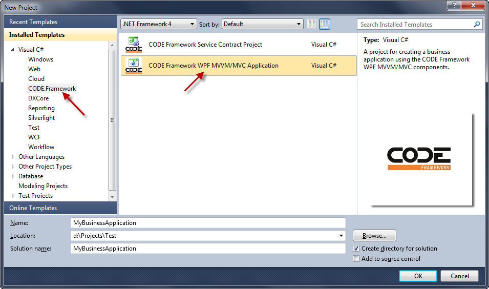
Figure 2: Using CODE Framework project templates to create a new WPF application.
This creates a new project/solution based on the selected template and the CODE Framework components. It also asks a few questions along the way, such as whether to create some default infrastructure like a user controller and a login view. It also asks if you want to bring in standard application skins (Figure 3). Note that at this point, we only went through a relatively small install of the CODE Framework Tools, but not the actual CODE Framework components. The tools recognize that problem and show the dialog box shown in Figure 4 in response to the framework components not being found. You now have the option to point the tool to a local folder or a ZIP file containing the framework components (which is useful if you want to use a specific build of the framework), or you can pick the default option, which causes the tool to download the latest release build from CodePlex for you. Either way, the framework assemblies are then copied into a dummy project within your current solution. This provides a convenient way to maintain the desired version of the framework with the solution, rather than globally. You can check this solution into source control and another developer can join the source controlled project and get everything needed without requiring an external install. It also allows developing multiple applications with different versions of the framework without always being forced to upgrade to the latest version. This approach has worked very well for us. However, if you would rather put these assemblies into the GAC, then you are certainly also free to do so.
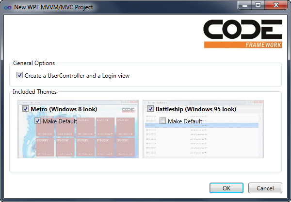
Figure 3: Setting options for our new CODE Framework WPF application.
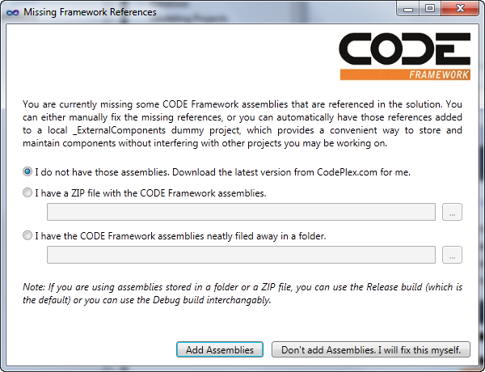
Figure 4: The project template recognizes the problem of missing framework assemblies and offers to download them automatically from CodePlex.
Accepting all the default settings, you end up with a project that contains the entire solution setup, including default controllers for a home screen and user management. You also get default themes. If you now simply hit F5 to run the application, you will get an application similar to the one in Figure 5. (Note: By default, any user name and password will get you past the login screen.) The exact look varies with the chosen skin of course. You can look in the Themes and Images folders to replace colors and images and the like if you want. But it is nice to know that out of the box, the framework provides various skins such as the (currently very popular) “Windows 8 Metro” skin shown in Figure 5.
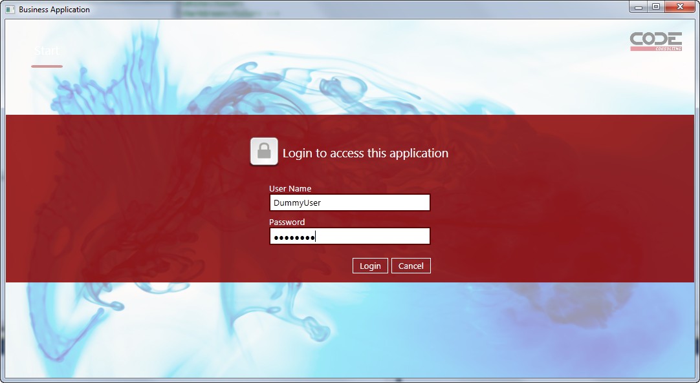
Figure 5: Out of the box, a CODE Framework application provides themes and components such as user login.
Take a look at the project structure. Figure 6 shows the most important aspects. As you can see, this project’s structure is largely identical to the setup of ASP.NET MVC projects. There is a Controllers folder which contains controller classes. There is a Models folder with, wait for it…. yup, models (view models, that is)! And there is a Views folder with sub-folders for each controller that contains the view definitions. These structures are similar to ASP.NET MVC, and they behave similarly. Controllers are the starting point for everything. For instance, if you were to look at an application that shows a list of invoices and you need to figure out how that all works and flows together, then a good starting point would be an InvoiceController class in the Controllers folder, and chances are it has a List() method/action. From that point on, you can then simply follow the flow of things. Just like in ASP.NET MVC, that controller will likely instantiate a view model of some sort and return a view. The rules by which views are found are identical to ASP.NET MVC as well (they are in the Views folder and either in a sub-folder of the same name as the controller or in a Shared folder). You can also explore some of the default code that was added to the existing controllers, and you will see that even that code is identical to code you’d write in ASP.NET MVC.
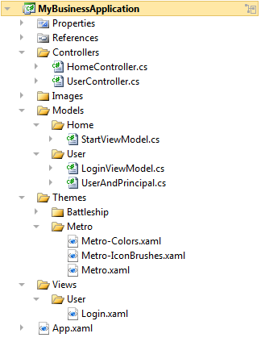
Figure 6: The solution structure of our new WPF project is practically identical to ASP.NET MVC project structures.
Of course there also are differences. ASP.NET MVC web applications are entirely driven by URLs and for anything to happen, a user must navigate to a starting URL. These URLs are then resolved based on routes set up in Global.asax. In WPF, things are a bit different, since we expect our application to start and display a window right away. For this purpose, we have some code in the code-behind file of App.xaml. This file uses the ApplicationStartup event to trigger some default actions. Here is that code:
void ApplicationStartup(object sender, StartupEventArgs e)
{
// TODO: This is a debug-only visualizer
var viewVisualizer = new ViewVisualizer();
viewVisualizer.Show();
Controller.RegisterViewHandler(viewVisualizer);
// Launching a main form ('shell')
Controller.Action("Home", "Start");
Controller.Action("User", "Login");
}
This snippet first registers a view visualizer. We are not too worried about what this does, other than the fact that this registers a handy debug feature that pops up a little secondary window while the application is running that shows which views have been loaded and where they came from. This is another handy feature the framework provides to make it easier to find your way around. But this is of secondary importance. What is more important is the last two lines of code, which trigger actions on controllers. This is comparable to navigating to a URL in ASP.NET MVC or, more specifically, to creating a link that navigates to a URL. Think of Controller.Action(…) as the equivalent of @Html.ActionLink(…) in a Razor view definition in ASP.NET MVC. In other words: The first line of code triggers the Start() method on the HomeController class, and the second line (which only gets generated if you chose to generate a user controller) triggers a login form. This also answers the simple question, “How do I launch a form in this framework?” which is often surprisingly hard to answer in many MVVM frameworks. Using this setup, you can always launch forms using the Controller.Action() method.
Adding Our Own Features
So now that we have created a basic project, it is time to add our own features. For the purposes of this article, I will use a scenario every business application developer can relate to: The creation of a customer management system. First we’ll need to create a new CustomerController class that will handle all tasks related to customer management. To do so, right-click on the Controllers folder and select Add → New Item. We’re adding a relatively simple class you can probably type by hand, but it is easiest to use the CODE Framework MVVM/MVC Controller item template. (Make sure you call your class CustomerController.cs to follow along with this project.) This creates a class with an Index() method. Change the name of that method to List. In addition, we probably need a view model to hold the data for the list of customers that is to be displayed. You can use any class stored in any location for this purpose, but we think it is a good idea to create a Customer method (same name as the controller) under the Models folder and then create a ListViewModel class based on the CODE Framework MVVM/MVC View Model item template. (Note: We like to call it ListViewModel rather than CustomerListViewModel since it is already in the Customer namespace, but you are free to adopt any naming convention that suits your needs.) All we need in the view model is the ability to store an enumerable list of simple customer information. For this purpose, let’s add an observable collection (to make WPF data binding work better than with a simple list or collection) and put simple CustomerInformation objects into it.
You should now have a controller as defined in Listing 1, and a view model as defined in Listing 2. Looking at these two code segments, there are a few interesting aspects. One aspect is the apparent simplicity of the controller class. It is also syntax-compatible to ASP.NET MVC controllers. Controllers are basic classes that inherit from a Controller base class that provides some convenient features. In our case, this controller class is defined as part of the CODE Framework. So it is a different controller than the ASP.NET MVC controller class. However, since they are syntax compatible in many cases, you could probably copy code from an ASP.NET MVC controller class into our WPF project and chances are it will just work.
The view model class is a bit more verbose but it isn’t very complicated. It inherits from a ViewModel base class, but that is simply a convenience class that provides things such as an implementation of INotifyPropertyChanged and a few other things you probably do not want to worry about. Ultimately, the view model class is just a container for some data and a bit of functionality that makes it easy to create an interface on top of it. You can use our ViewModel base class, or you can use just about any other class for this. It is a very straightforward setup. (Keep in mind that view models are meant to make your life easier! If you look at many MVVM frameworks today, that is easy to forget…)
One of the unique features we get when we use the basic ViewModel class is that it implements the IHaveActions interface. This interface defines an enumerable list of IViewAction objects. View actions are a core (but optional) concept in the CODE Framework. They are a simple way to define generic actions associated with a view, such as saving data or closing the view. They are fancy versions of WPF Command objects, and they in fact can be used interchangeably with commands (you can bind them to a button’s Command property for instance). They also provide a few extra features, such as the ability to define icons that go with those actions, or to create groups of actions, and so forth. In our example, I use a generic action that triggers closing the current UI when triggered (perhaps by clicking on a button or a menu item… more about that below).
Since our example is to show a list of customers, we’d better populate our customer list with some data. This would typically be done by calling a service or by talking to a middle tier or database of some kind. The CODE Framework has extensive features for this aspect of the application, but those are beyond the scope of this article. For now, I just created a simple loop that creates dummy data. Feel free to load your data from some other location if you want to spice up the example a bit.
Now, all that’s missing is the view. Create a new folder called Customer (again, same as the controller) under the Views folder. Then, right-click and select Add → New Item and choose the CODE Framework WPF MVVM/MVC View template as the basis for your new item. Since our method in the controller is called List(), the default name for our view should be List.xaml (you could specify different names the same way ASP.NET MVC does). You could create your views in a number of different ways, but using the view template gives you a great starting point and it provides a few additional options through the dialog box shown in Figure 7.
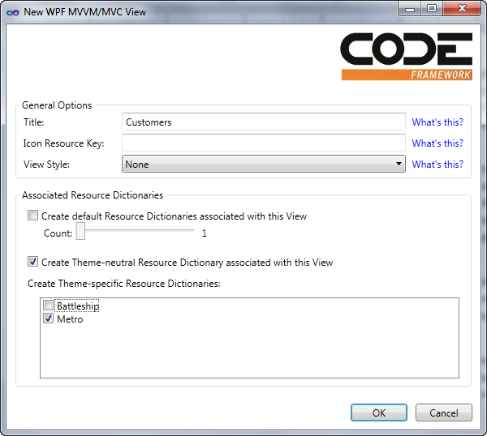
Figure 7: Options for a new WPF MVVM/MVC View.
A view in the CODE Framework can be a number of different things. For instance, a view could be a user control with a code-behind file. It could also be a stand-alone XAML file with no associated code (an option we particularly like, because it is not specific to WPF and can be reused across multiple environments). In fact, the CODE Framework supports pluggable view engines just like ASP.NET MVC (see a pattern emerge here?) so this system is completely customizable and additional view technologies can be added as needed.
In our case, we’ll go with a stand-alone XAML file. In addition to this XAML file, we can choose to create view-specific Resource Dictionaries the framework will load as needed. This includes both Resource Dictionaries that are always loaded (and are a great way to keep your view definition clean… which is not a characteristic you would attribute to most XAML files in most projects) and Resource Dictionaries that are loaded only for certain themes (support for themes/skins is a first-class feature in the CODE Framework). If you choose the same settings as shown in Figure 7, you will end up with a stand-alone XAML file as well as a Metro-specific Resource Dictionary (which will only be loaded if the application runs using the Metro theme) and a theme-neutral dictionary that will be loaded for all skins that do not have a specific theme Resource Dictionary (in other words: for all themes except Metro).
Since we want to display a list of customers, all we need to do in our view is add a ListBox that is bound to the Customers collection on our view model. (Note: You could, of course, also use other types of controls, such as a DataGrid, but as we will see below, ListBoxes aren’t a bad choice in XAML UIs.) Here is the code that goes with our view:
<mvvm:View xmlns="http://schemas.microsoft.com/winfx/2006/xaml/presentation"
xmlns:mvvm="clr-namespace:CODE.Framework.Wpf.Mvvm;assembly=CODE.Framework.Wpf.Mvvm"
Title="Customers">
<ListBox ItemsSource="{Binding Customers}" />
</mvvm:View>
As you can see, this view definition is extremely simple. If we just ran this view, it wouldn’t look very good (although probably better than you’d expect as default theme and layout functionality kicks in) and we will improve that in a moment. However, you can already see a pattern emerge here: CODE Framework views (whether they are used within the overall CODE Framework setup or just as view objects in other MVVM frameworks) are simple and concise. This makes them easy and fast to create and it also makes them very reusable and easy to maintain. Not to mention that it isn’t error-prone. Even junior developers will be able to learn the required level of XAML very quickly.
Note that the root object of the view is a special View object provided by the CODE Framework. You could have also simply used a UserControl or something similar, and that would have been perfectly fine. However, if you use the view object, you gain some extra features, such as the ability to set a view Title and even associated icons. It also enables us to create a completely stylable view (which includes the ability to style the layout and not just attributes). If you are an observant XAML developer, you may have noticed that there is no further layout element inside the View object. If you start with a UserControl you would typically put a layout container inside that object (such as a Grid) and then add your further objects inside that element. Using the special view object, adding another layout container is unnecessary. In fact, a view by default uses a Grid as its default layout container, but that choice is completely stylable (similar to styling the layout panel of a ListBox).
If the babble in the last paragraph didn’t mean much to you, don’t worry! You shouldn’t have to know about these details unless you are already familiar with some of those concepts. All you need to really know is that the definition of the view above will produce a ListBox that uses up the entire space allocated to this view.
We are now ready to give our view a first trial run. The only thing missing is a way to launch our new view. We could add another Controller.Action(…) call in the application startup event, but the more elegant way is to add an item to the application’s menu. Using CODE Framework methodology, menus are collections of actions that can appear in the application in a variety of ways. For instance, using a conventional Windows skin (such as the default “Battleship” skin that is included in the framework), these actions show us as a menu across the top of the application. Using the Windows 8 Metro skin on the other hand, shows the same menu as a collection of Live Tiles. Other skins/themes may choose to show the menu in completely different ways, such as a Ribbon in an Office skin perhaps.
The main application menu is defined in the StartViewModel class, which is used by the home controller. (Check out the Start() method on the home controller which uses that view model to return a special type of view called a “Shell”, which is used as the main application window). The StartViewModel class has a convenient LoadActions() method in which the collection of actions gets populated. (Note: This method is called whenever a new user logs in, so one could easily change the menu for different users.) To add our new action, let’s add the following line of code somewhere after the TODO comment:
var customerAction =
new ViewAction("Customers",
execute: (a, o) => Controller.Action("Customer", "List"));
customerAction.Significance =
ViewActionSignificance.AboveNormal;
Actions.Add(customerAction);
This creates a new ViewAction, assigns the “Customers” as the caption, and uses a lambda expression as the code that gets fired when the execute method is called. (This method accepts two parameters. The first is a reference to the action itself, and the second is a potential parameter, but we are not interested in those. All we do is fire a controller action.) We can also set additional parameters. We could set an associated icon for instance. We could even assign entire views and view models to each action, which could then be displayed in-place. Depending on the chosen skin, these types of settings may have completely different effects. Using the Metro skin, for instance, these views are displayed as the content of each Live Tile. Other skins can choose to use this information differently, or even ignore it altogether. In our current example, I simply set the Significance property to AboveNormal. The Metro skin interprets that by showing a Live Tile that is twice the normal size. (Note: There also are properties for categories and sub-categories, which allow you to assign menu items to specific parent menus.)
You can now press F5 to run the app. Once you are past the Login screen, you should see the application’s main menu which now includes the new menu item. Depending on the skin you chose as the default (you can change this default in App.xaml) you will see either Live Tiles or a conventional drop-down menu across the top of the screen. You can even switch between the two styles, clicking the theme menu items (by default, there is one menu item for each theme you include in your project). Click the new menu item, and the customer list should appear.
Let me point out a few interesting details. The customer list does not show any useful data at this point (and we will fix this momentarily), but it is already fully functional. Our view model got associated with the view (the controller takes care of that) and data binding made the data from the view model show up in the view. In addition, note that there is a Close button in this view (in fact, if you are looking at this in the Battleship theme, you have a Close button and a Close menu item under the File menu). This button is not in the view definition as such, but it is in the view model where we added it as a default action (see above). This is an important (although optional) concept in the CODE Framework. Standard UI elements such as standard buttons associated with a view do not have to be manually defined in the view but can simply be stuck in the Actions collection and the skins will then pick them up and display them in a standardized way. This could be either in buttons across the bottom of the form, or buttons in a toolbar, or a Ribbon, or a Menu, touch gestures, or a right-click menu, or Windows 8 Charms, or Windows Phone 7 menus, or… well, you get the idea. This concept makes the application extremely flexible and reusable. And best of all, once you understand this idea, it is extremely easy to use. Not to mention productive. After all, there is no faster way to define a UI than to not even have to define it.
Showing Useful Customer Information
All of this is cool, but unless we can actually show useful customer information in our view, nobody is going to care. What we need to do to make this happen is define a data template (to define the look of each item) and set a few additional properties on our ListBox. We could do that inline in our XAML view definition, but that usually turns the XAML into a lengthy mess. Besides, hardcoding a specific look into the view itself makes it much less flexible and less reusable. For this reason, we like to move everything that defines the actual look of the UI into Resource Dictionaries. The core view definition only defines things with true business significance, such as what is the data source we are bound to, is the data read-only or writable, and what happens when you click on it. Everything else typically goes into a separate file that becomes an interchangeable source of visual information.
To do this, we change the definition of our ListBox to point to an external style:
<ListBox ItemsSource="{Binding Customers}" Style="{DynamicResource CustomerList}" />
At this point we do not have a style called CustomerList so we need to create it somewhere. To start out, let’s create the default style that gets applied whenever no theme-specific style (see below) is defined. We thus put this style into the List.Default.xaml Resource Dictionary. We then proceed to define a data template as part of this style. For this example, I am using a simple template with three different labels bound to our underlying list of customers. I am also adding vertical column divider lines. You can see the complete code snippet in Listing 3 and the resulting UI in Figure 8.
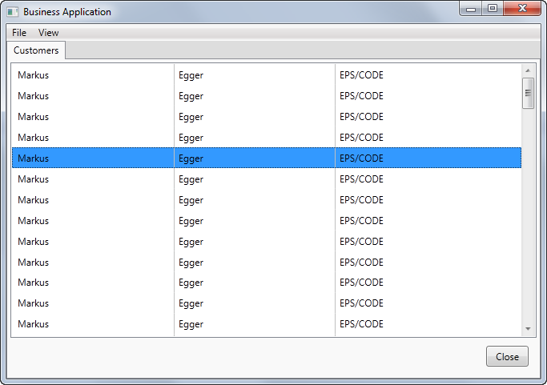
Figure 8: Our application in “Battleship” skin showing a simple customer list.
Note: If you run this example and it still shows up without three columns of data, then you are most likely running with the Metro skin. Since we defined a special Resource Dictionary for Metro mode, the framework automatically loads the List.Metro.xaml. The default resource dictionary (List.Default.xaml in our case) is only loaded when there is no theme-specific dictionary. If you have resources that are valid across themes, you could put them into yet another dictionary called List.Layout.xaml. In fact, you could have more than 20 layout dictionaries to break things out into manageable chunks. The Layout dictionaries are always loaded regardless of the applied theme. (Note: Never call a custom theme Layout or Default.) This ability of automatically loading Resource Dictionaries with a view is a key feature in the CODE Framework to facilitate simple view creation, good organization of clean XAML, and easy theming.
Let’s go ahead and define a special look for the Metro version. Put the code from Listing 4 into List.Metro.xaml to end up with the result shown in Figure 9. As you can see, this code snippet is a little more involved than the first version. (In fact, Resource Dictionaries often have significantly more code than the actual views, but the styles defined in resources can be reused across a number of screens throughout the application). In many cases, it is advisable to use a design tool to edit these styles. Expression Blend is an excellent tool for this task.
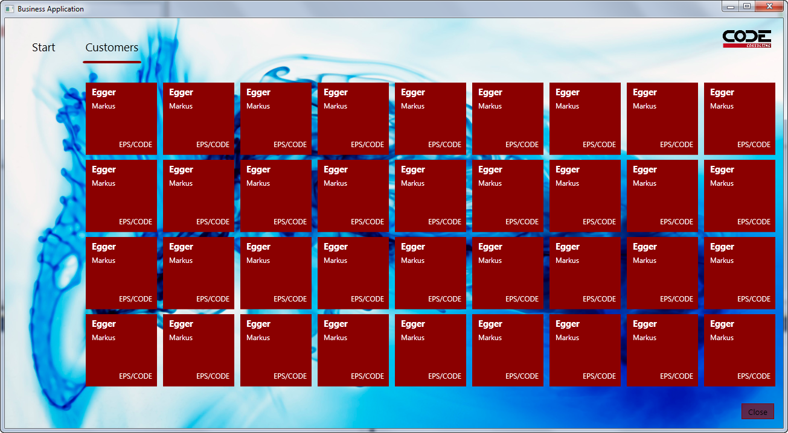
Figure 9: The same screen as the one shown in Figure 8, but this time running with a Metro skin.
The style shown in Listing 4 includes a few interesting details. Most interesting perhaps is that the style created is based on another style called Metro-Control-ListBox-Tiles. This is a standard style that ships with the CODE Framework. (The name follows a standard pattern like this: [Theme]-[TypeOfStyle]-[TargetType]-[ExplicitName]). The most important feature of this style is that it changes the ListBox’s layout strategy from a simple top-to-bottom layout to a tile-based layout. (This is a first glimpse at how the CODE Framework actually helps you in creating certain visual appearances out of the box.) Armed with this feature, we are left with the simple task of styling each item as a square of a certain size and then position our data-bound elements within it. The most interesting aspect of that is the use of a standard background color (CODE.Framework-Application-ThemeBrush1).
Editing a Customer
Our customer list is now fairly functional, so let’s move on to the next aspect we typically find in a business application: editing data. Let’s return to our customer controller and add the following action/method to enable customer editing:
public ActionResult Edit(Guid id)
{
var model = new EditViewModel();
model.LoadData(id);
return View(model);
}
The view model is the most interesting element. You can see the full code in Listing 5. The fundamental idea is relatively trivial though. We have an object with all the properties we need in the UI. We also have two actions (Save and Close). Just like before, actual data handling is fake, but you can easily add your own data access code.
Of course we also need a view. Add a new view called Edit.xaml to the Views\Customer folder. Use the standard view template. In the options dialog box, set the view title (to “Customer” perhaps) and unselect all the special settings for Resource Dictionaries, as we do not need any for this view. Here is the important part: Set the view Style to Edit Form Layout. This invokes a standard style that ships with every theme the framework supports and it takes on the burden of creating a layout for the form. Using these settings, a single file should be created, and the default view definition should look like this:
<mvvm:View xmlns="http://schemas.microsoft.com/winfx/2006/xaml/presentation"
xmlns:mvvm="clr-namespace:CODE.Framework.Wpf.Mvvm;assembly=CODE.Framework.Wpf.Mvvm"
Title="Customer"
Style="{DynamicResource CODE.Framework-Layout-EditFormLayout}">
Note the special setting of the Style property. You can explore the standard styles available by setting that option in the view creation dialog to the different available settings.
All that is left to do in this view is to set the individual view elements we want (labels and textboxes, mostly) and bind them to data. Listing 6 shows the complete definition of this view. The most interesting aspect of this view is not the code that is there, but the code that is NOT there. There is no information in this view that sets the position of elements or anything like that. That burden is completely offloaded to the view’s style. The EditFormLayout style inspects all the elements that are in this view and positions them on the screen in a way it deems appropriate. In a typical Windows application, this may be a layout with a column of labels and controls to the right. In a smaller screen environment (such as a phone), an appropriate layout may be more of a top-to-bottom stack. In touch environments, this could be completely different yet again. Figure 10 shows the customer edit form in Metro style.
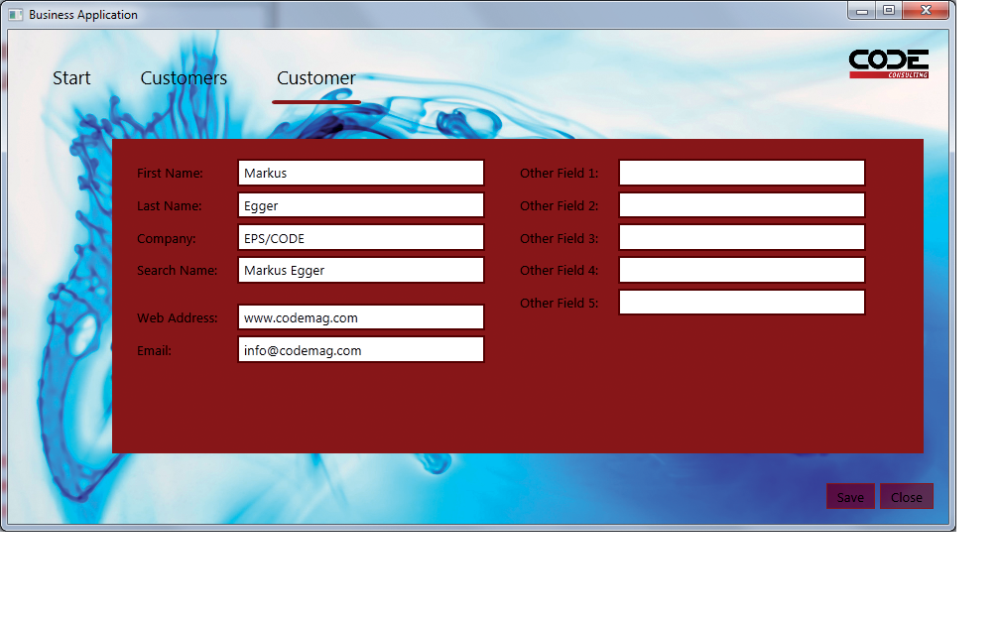
Figure 10: Our customer edit form laid out automatically in Metro style.
At this point, the remaining question is, “How does the customer edit form get launched?” The way I envision that should work is that people can select a customer from the list and then bring it up for editing. To do so, we bind the customer ListBox to an edit command. Observant WPF developers may notice that that is not as easy a task as it may seem at first, because ListBoxes do not expose any commands that are useful for that purpose. Luckily, the CODE Framework fixes this problem. There are two ways to solve this issue. For option one, the framework provides ways to bind any WPF event to commands. The second option is even easier: The CODE Framework provides attached properties that can be used to wire up standard functionality with commands. And this is exactly what I chose to do here in this code that binds the ListBox to a command:
<mvvm:View xmlns="http://schemas.microsoft.com/winfx/2006/xaml/presentation"
xmlns:mvvm="clr-namespace:CODE.Framework.Wpf.Mvvm;assembly=CODE.Framework.Wpf.Mvvm"
xmlns:c="clr-namespace:CODE.Framework.Wpf.Controls;assembly=CODE.Framework.Wpf"
Title="Customers" >
<ListBox ItemsSource="{Binding Customers}"
Style="{DynamicResource CustomerList}"
c:ListBoxEx.Command="{Binding EditCustomer}" />
</mvvm:View>
Note that the Command property is defined as an attached property on the ListBoxEx class. You can use this property on any ListBox in WPF due to its attachable nature. We use this technique throughout the framework for various things.
The command binding requires that there is an EditCustomer command (or action) on the view model, so I simply added it as a property and initialize it with an instance of a ViewAction:
public class ListViewModel : ViewModel
{
public ListViewModel()
{
Customers = new ObservableCollection<CustomerInformation>();
LoadCustomers();
Actions.Add(new CloseCurrentViewAction(this, beginGroup: true));
EditCustomer = new ViewAction("Edit", execute: (a,o) => LaunchEdit(o as CustomerInformation));
}
public IViewAction EditCustomer { get; set; }
// ...
When the command fires, it passes the selected item (or items) as the command parameter. This allows us to conveniently grab that information and then load the edit data based on that information in our LaunchEdit() method. In this example, we simply fake that functionality since we are not accessing a real database:
public void LaunchEdit(CustomerInformation customer)
{
// Pretending to load a specific customer
Controller.Action("Customer", "Edit", new {id = Guid.Empty});
}
This passes an ID parameter to the Edit method on the controller (the actual ID is fake in this example since this is only added for demonstration purposes). Again, the syntax is identical to the one used in ASP.NET MVC.
By default, the command fires when an item in the list is single-clicked. This is appropriate for the Metro skin, but not so much for other skins. Luckily, there is a ListBoxEx.CommandTrigger property that can be set to either single click or double click. You can set this property in the Resource Dictionaries so you can single click in Metro and double-click in the default skin. This excellent example shows how to use styles to set behavior and not just visual appearance.
And that’s it! We now have the ability to look at a list of customers and bring up individual customers for editing. But to provide one more, quick example, let’s also add a customer search feature.
Adding More Automatic Layout
We’ll add another action to our CustomerController class called Search(). Also, we need to add another action to our main menu to launch the search action. We then need a view model that holds a list of customers (the search result) and it also has to provide properties for each search criteria as well as an action to trigger the search. We could create a brand new view model for this purpose, but we already have a view model that can hold a list of customers and trigger editing of those customers, so we can simply sub-class that view model and add a search action as well as several properties for search criteria (again, we will simply fake the search operation for demonstration purposes). The following snippet shows an example version of that view model:
public class SearchViewModel : ListViewModel
{
public SearchViewModel() : base(false)
{
SearchCustomers = new ViewAction("Search", execute: (a,o) => LoadCustomers());
}
public IViewAction SearchCustomers { get; set; }
public string SearchTerm1 { get; set; }
// More search terms here…
}
Almost there! Now all we need is a view. Add a new view item called Search.xaml to the Views\Customer folder. Choose to have a default Resource Dictionary as well as a Metro Resource Dictionary created (just like we did for the customer list). Then (and this is the important part!), pick the Primary/Secondary (with List) Layout style. The basic idea for our search screen is to have the main area of the screen filled with the same customer list we used before (this is what is considered the “primary” part of the UI). In addition, we want to display a set of search controls and a button to trigger the search (this is the “secondary” part of the UI). The chosen style can automatically create such a layout. (There are actually two variations for primary/secondary layouts. One is specific to lists of data, which tend to have a slightly different look from other primary/secondary styles.)
With this basic view in place, you can copy the same ListBox definition we had in List.xaml. The only missing aspect is that we need to flag the ListBox as the primary UI element. We can do so by setting the View.UIElementType attribute to Primary (see Listing 7). We then also add another area that will hold our search terms. A convenient way to do so is to add another View element inside the main view. (View elements are really just container objects that can be stacked at will, in which case, they define “sub-views” if you will.) This gives us another stylable area that can employ a different automatic layout style. This is a very important concept. Automatic layouts are extremely powerful, but it is usually not realistic to expect that automatic layouts can handle all forms 100%. But with this technique of stacking different automatic layout approaches within each other, you can handle a very wide range of layout needs, and combine them at will even with hand-crafted layouts.
Note: The primary/secondary layout style is a very powerful style. Depending on the theme, this style can make entirely different decisions as to what is appropriate for this style. For instance, in the example in this article, we have several relatively narrow fields one after another. This is a good candidate for a visual appearance that is taller than wide. Styles such as the Metro style will therefore decide to put those UI elements to the left of the primary UI. If on the other hand, we had just a single search box that was very wide, the style would decide to put it across the top. This exact behavior can be tuned through additional stylable properties.
In our example, we add this additional view container and set its layout style to a simple form layout. All that’s left to do now is add labels and textboxes (bound to the search term properties) as well as a button that is bound to the SearchCustomers action. At this point, we are still stuck with the basic ListBox style provided by WPF, since the original style we created was only used by the Resource Dictionary loaded for the List.xaml view. We can copy those styles over into our new Resource Dictionaries. A better approach is to simply add a command to merge those Resource Dictionaries (which can be done particularly easy with Expression Blend). Yet another approach is a combination of the two. When merging in the original dictionary, one can then create a new style based on the prior style yet selectively set additional or overridden attributes.
Figure 11 shows result of a slightly more advanced version of all this (which you can download with the samples associated with this article).
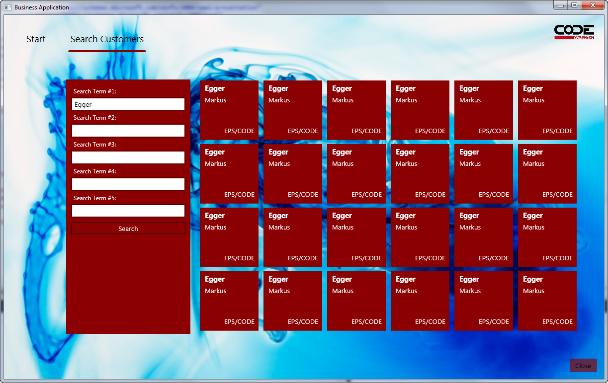
Figure 11: A highly maintainable and reusable Metro-style search screen built entirely out of CODE Framework’s automatic layout styles takes very little code to write.
Conclusion
This article only scratched the surface of what is possible with the WPF components included in the CODE Framework, yet the WPF elements are only a small sub-section of this framework. In future articles I will explore features such as support for SOA (Services), writing web applications, writing mobile applications on various platforms, and much more.
We encourage you to not just download the framework and give it a try, but also to send us feedback and feature suggestions. If you are interested, you can even contribute to the CODE Framework effort. And don’t forget to rate the framework on CodePlex and the Visual Studio Gallery.
Additional Code Listings
Listing 1: Our CustomerController Class
using CODE.Framework.Wpf.Mvvm;
using MyBusinessApplication.Models.Customer;
namespace MyBusinessApplication.Controllers
{
public class CustomerController : Controller
{
public ActionResult List()
{
var model = new ListViewModel();
return View(model);
}
}
}
Listing 2: The ListViewModel class associated with the CustomerController’s List() method
using System.Collections.ObjectModel;
using CODE.Framework.Wpf.Mvvm;
namespace MyBusinessApplication.Models.Customer
{
public class ListViewModel : ViewModel
{
public ListViewModel()
{
Customers = new ObservableCollection<CustomerInformation>();
LoadCustomers();
Actions.Add(new CloseCurrentViewAction(this, beginGroup: true));
}
public ObservableCollection<CustomerInformation> Customers { get; set; }
public void LoadCustomers()
{
// Fake data! We should probably access a service or so...
for (int x = 0; x < 100; x++)
Customers.Add(new CustomerInformation
{
FirstName = "Markus",
LastName = "Egger",
Company = "EPS/CODE"
});
}
}
public class CustomerInformation
{
public string FirstName { get; set; }
public string LastName { get; set; }
public string Company { get; set; }
}
}
Listing 3: The default data template for our customer ListBox
<ResourceDictionary xmlns="http://schemas.microsoft.com/winfx/2006/xaml/presentation"
xmlns:x="http://schemas.microsoft.com/winfx/2006/xaml">
<Style TargetType="ListBox" x:Key="CustomerList">
<Setter Property="ItemTemplate">
<Setter.Value>
<DataTemplate>
<StackPanel Orientation="Horizontal">
<Label Content="{Binding FirstName}" Width="200" />
<Rectangle Width="1" Stroke="Silver" />
<Label Content="{Binding LastName}" Width="200" />
<Rectangle Width="1" Stroke="Silver" />
<Label Content="{Binding Company}" Width="200" />
</StackPanel>
</DataTemplate>
</Setter.Value>
</Setter>
</Style>
</ResourceDictionary>
Listing 4: The data template for the same data as in Listing 3, but this time applying a Metro Live Tile look
<ResourceDictionary xmlns="http://schemas.microsoft.com/winfx/2006/xaml/presentation"
xmlns:x="http://schemas.microsoft.com/winfx/2006/xaml">
<Style TargetType="ListBox" x:Key="CustomerList" BasedOn="{StaticResource Metro-Control-ListBox-Tiles}">
<Setter Property="Margin" Value="125,25,0,0" />
<Setter Property="ItemTemplate">
<Setter.Value>
<DataTemplate>
<Grid Background="{DynamicResource CODE.Framework-Application-ThemeBrush1}" Width="120" Height="120">
<Label Content="{Binding LastName}" Foreground="White" HorizontalAlignment="Left"
VerticalAlignment="Top" FontSize="14.667" FontWeight="Bold" Margin="5,0" />
<Label Content="{Binding FirstName}" Foreground="White" HorizontalAlignment="Left"
VerticalAlignment="Top" Margin="5,25,0,0" />
<Label Content="{Binding Company}" Foreground="White"
VerticalAlignment="Bottom" HorizontalAlignment="Right" Margin="0,0,5,5" />
</Grid>
</DataTemplate>
</Setter.Value>
</Setter>
</Style>
</ResourceDictionary>
Listing 5: The view model used to edit customer information
using System;
using System.Windows;
using CODE.Framework.Wpf.Mvvm;
namespace MyBusinessApplication.Models.Customer
{
public class EditViewModel : ViewModel
{
public EditViewModel()
{
Actions.Add(new ViewAction("Save", execute: (a, o) => Save(), category: "Customer"));
Actions.Add(new CloseCurrentViewAction(this, beginGroup: true, category: "Customer"));
}
public void LoadData(Guid id)
{
FirstName = "Markus";
LastName = "Egger";
Company = "EPS/CODE";
SearchName = "Markus Egger";
Web = "www.codemag.com";
Email = "info@codemag.com";
}
public void Save()
{
MessageBox.Show("Pretending to save...");
}
public string FirstName { get; set; }
public string LastName { get; set; }
public string Company { get; set; }
public string SearchName { get; set; }
public string Web { get; set; }
public string Email { get; set; }
public string SomeOtherField1 { get; set; }
public string SomeOtherField2 { get; set; }
public string SomeOtherField3 { get; set; }
public string SomeOtherField4 { get; set; }
public string SomeOtherField5 { get; set; }
}
}
Listing 6: The complete definition of the customer edit view
<mvvm:View xmlns="http://schemas.microsoft.com/winfx/2006/xaml/presentation"
xmlns:mvvm="clr-namespace:CODE.Framework.Wpf.Mvvm;assembly=CODE.Framework.Wpf.Mvvm"
Title="Customer"
Style="{DynamicResource CODE.Framework-Layout-EditFormLayout}">
<Label>First Name:</Label>
<TextBox Text="{Binding FirstName}" Width="250" />
<Label>Last Name:</Label>
<TextBox Text="{Binding LastName}" Width="250" />
<Label>Company:</Label>
<TextBox Text="{Binding Company}" Width="250" />
<Label>Search Name:</Label>
<TextBox Text="{Binding SearchName}" Width="250" />
<Label mvvm:View.GroupBreak="True">Web Address:</Label>
<TextBox Text="{Binding Web}" Width="250" />
<Label>Email:</Label>
<TextBox Text="{Binding Email}" Width="250" />
<Label mvvm:View.ColumnBreak="True">Other Field 1:</Label>
<TextBox Text="{Binding SomeOtherField1}" Width="250" />
<Label>Other Field 2:</Label>
<TextBox Text="{Binding SomeOtherField2}" Width="250" />
<Label>Other Field 3:</Label>
<TextBox Text="{Binding SomeOtherField3}" Width="250" />
<Label>Other Field 4:</Label>
<TextBox Text="{Binding SomeOtherField4}" Width="250" />
<Label>Other Field 5:</Label>
<TextBox Text="{Binding SomeOtherField5}" Width="250" />
</mvvm:View>
Listing 7: The complete definition of the Search view as shown in Figure 11
<mvvm:View xmlns="http://schemas.microsoft.com/winfx/2006/xaml/presentation"
xmlns:mvvm="clr-namespace:CODE.Framework.Wpf.Mvvm;assembly=CODE.Framework.Wpf.Mvvm"
xmlns:c="clr-namespace:CODE.Framework.Wpf.Controls;assembly=CODE.Framework.Wpf"
Title="Search Customers"
Style="{DynamicResource CODE.Framework-Layout-ListPrimarySecondaryFormLayout}">
<mvvm:View UIElementType="Secondary" Style="{DynamicResource SimpleSearch}">
<Label>Search Term #1:</Label>
<TextBox Text="{Binding SearchTerm1}" />
<Label>Search Term #2:</Label>
<TextBox Text="{Binding SearchTerm2}" />
<Label>Search Term #3:</Label>
<TextBox Text="{Binding SearchTerm3}" />
<Label>Search Term #4:</Label>
<TextBox Text="{Binding SearchTerm4}" />
<Label>Search Term #5:</Label>
<TextBox Text="{Binding SearchTerm5}" />
<Button Command="{Binding SearchCustomers}" Content="{Binding SearchCustomers.Caption}" />
</mvvm:View>
<ListBox ItemsSource="{Binding Customers}" Style="{DynamicResource CustomerList2}"
c:ListBoxEx.Command="{Binding EditCustomer}" vvm:View.UIElementType="Primary" />
</mvvm:View>

Comment or report problem with topic